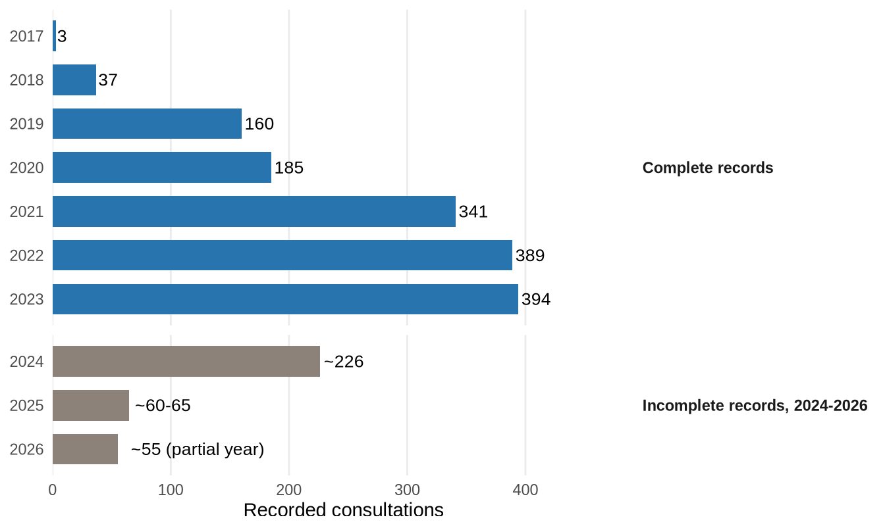
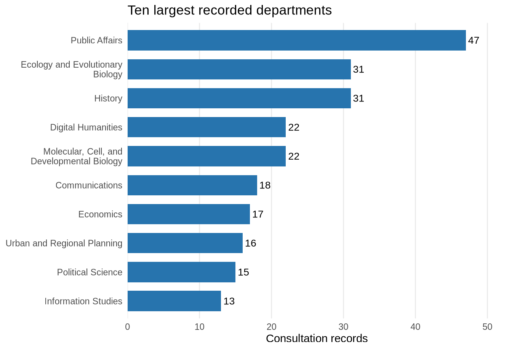
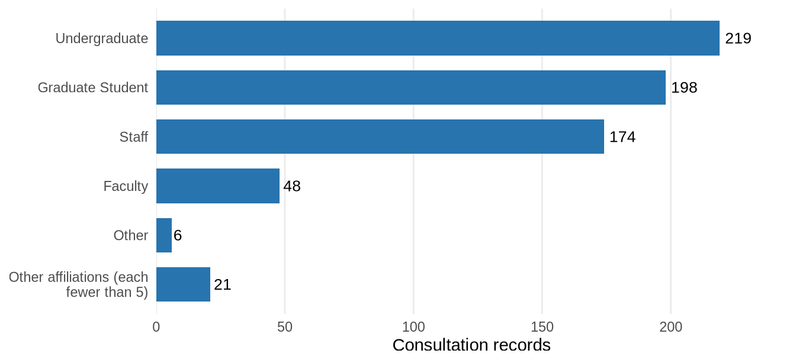

Consulting and project support
How much consulting DSC recorded, who used it, and what project work followed. Definitions and the separate audit are at the end.
DSC recorded about 1,850 scheduled research consultations from 2017 to September 2026 (claim-register #10), with DSC staff and DataSquad student consultants alike. These are appointments, not people: one researcher can book many.
NoteDefinition and sources
The series counts scheduled appointments from Calendly (2017 to mid-2024), then LibInsight and LibCal. DataSquad’s in-person walk-in sign-ins are not included. Internal meetings and canceled appointments are removed.
Recorded consultations over time
Scheduled appointments by calendar year, 2017 to September 2026.
Records are incomplete after mid-2024. Calendly ended, LibCal wasn’t in use until May 2025, and two reorganizations and staff departures cut logging. The later counts are what was recorded, not estimates of the missing activity, so this series cannot show how demand changed after 2023.
NoteView annual counts
| Year | Recorded consultations | Records | Source |
|---|---|---|---|
| 2017 | 3 | Before the recording gap | Calendly (old-Mac transfer); internal rows removed |
| 2018 | 37 | Before the recording gap | Calendly (old-Mac transfer); internal rows removed |
| 2019 | 160 | Before the recording gap | Calendly (old-Mac transfer); internal rows removed |
| 2020 | 185 | Before the recording gap | Calendly (old-Mac transfer); internal rows removed |
| 2021 | 341 | Before the recording gap | clean_dsc_2021-consults.csv |
| 2022 | 389 | Before the recording gap | clean_dsc_2022_consults.csv |
| 2023 | 394 | Before the recording gap | clean_dsc_2023-consults.csv |
| 2024 | ~226 | Incomplete after mid-2024 | Calendly Jan-May (165) + LibInsight Jun-Dec (61) |
| 2025 | ~60-65 | Incomplete after mid-2024 | LibInsight ~46 + LibCal ~20 net-new |
| 2026 | ~55 | Incomplete after mid-2024 | LibCal to Sept + some LibInsight; partial year |
Who used consulting?
January 2021 to June 2024 records with a recorded department. Consultation records, not unique people.

Another 119 records come from departments with fewer than 5 each; they are grouped in the table below, not shown as one bar.
NoteAll departments (searchable)
Consultations by researcher role

Same records file, Jan 2021 to Jun 2024. 867 of the 1,533 records have no role recorded and are not shown. That is missing information, separate from the small roles combined into one row.
Student project work
DataSquad students documented 204 project tasks from 2023 to 2025. A task is one piece of follow-on project work tracked on the team’s Trello board, such as cleaning a dataset, writing code, or preparing a map, after a consultation turned into a project. Tasks are not consultations and are not added to the consultation counts. Tracking on Trello became routine in 2023, so earlier project work is not counted.
What this work supported
Some consultations became multi-year collaborations. Two examples, with full accounts on the Research enabled page:
- Police helicopter surveillance: DSC staff and DataSquad students cleaned and joined a lab’s flight data, and one data-loading step went from about 318 minutes to about 2.
- Deaths in custody: DataSquad students merged and reconciled several sources into a national dataset the lab now maintains and updates itself.
Sources and counting rules
Three different record sets appear on this page. They are kept separate because they count different things:
| Record set | Window | Used for |
|---|---|---|
| Scheduled consultation series | 2017 to September 2026 | The headline count and the annual chart |
| Consultation records file | Jan 2021 to Jun 2024 | Department and researcher-role breakdowns (includes DataSquad walk-in sign-ins) |
| 2023-2025 consultation audit | January 2023 to 2025 | Checking the records; project task counts |
NoteThe 2023-2025 consultation audit
The audit combined DSC’s LibInsight appointments with DataSquad’s LibInsight appointments and walk-in sign-ins, excluded canceled appointments, and removed likely duplicate manual logs. It found 741 direct consultations (claim-register #7). It is a check on the records, not a second headline: its definition and window differ from the series above.
- DSC staff appointments (LibInsight): 462
- DataSquad consultations (LibInsight and sign-ins): 142
- A narrower combined count using fewer DataSquad sources: 604. The 741 total is larger because it includes more DataSquad sign-in sources; the parts above do not sum to it.
- Likely duplicate manual logs removed: about 4 (same provider, same minute)
| Source | Record type | Rows | Date range |
|---|---|---|---|
| datasquad_signin | walkin_consult | 56 | 2023-10-31 – 2024-06-05 |
| libinsights | manual_consult_log | 93 | 2025-01-09 – 2026-02-13 |
| libinsights | scheduled_consult | 1,353 | 2021-01-04 – 2025-03-27 |
| trello | trello_task_comment_weighted | 640 | 2021-11-10 – 2025-03-25 |
NoteTask-tracking methods
- Documented project tasks are Trello cards on the DataSquad board, excluding the
Inbox,Future Projects/Ideas, andTeam Infolists and including archived completed cards. All cards, including those lists: 219. - The audit also weighted each card by its comments (612 activity rows). That measure is kept for internal checks and is not comparable to consultation counts.
- Growth in task counts after 2023 partly reflects wider use of Trello, not only more work.
- Full rules: Metrics Governance · About & methodology
See also: Instruction workshop attendance · Infrastructure Dataverse and AWS metrics · About & methodology
NoteCite this page
UCLA Library Data Science Center. (2026). Consulting and project support. Retrieved from https://ucla-data-science-center.github.io/dsc-stats-reports/consulting.html
Last rendered: October 08, 2026